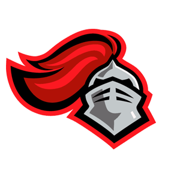

About Me
I'm a computer science major with a concentration in
computer graphics at Rutgers University - New Brunswick.
Hobbies:
In my free time I enjoy going to hackathons and participating
in game jams. Outside of my CS related hobbies, I like
playing ultimate frisbee and competing in Tetris.
Bio:
Name:
Doug Rudolph
Age:
21
Location:
Sparta, NJ
Check out my resume and my profile on other platforms
Work Experience

Co-founder &
Software Engineer
Reccelerator® is a cloud-based management system designed to
support recreational and associated facilities' everyday needs.
Designed to include means of member organization, internal data
collection, and sport communication tools. Reccelerator® offers the
inclusion of a privately managed organization, engineered for the
cloud with flexible data access and administrative controls while
targeting any form factor and any organization's computing platform.
Reccelerator® inc. | July 2015 - Now
I work under Dr. Bahman Kalantari as a developer on
his polynomiogrpahy computer graphics research. As a researcher,
it is my job to develop multiplatform applications that visualize
several polynomiographic algorithms for Android, iOS, and HTML.
While developing these applications, I am specifically responsible
for creating interactive screens for each polynomiographic
algorithm, responsive user interfaces, and a website that allows
users to share their visualized creations
Rutgers University |
May 2016 - Now

Recitation Leader &
CS Department Tutor
As a recitation instructor, it is my job to answer questions and
solidify concepts that are taught during weekly CS 111
lectures. Outside of the classroom, I also hold weekly office
hours where students may come to me privately and seek out
one-on-one help with homework, assignments, and general
questions.Code Red is a tutoring service for incoming CS students
to meet once a week with a qualified upperclassman for
one-on-one tutoring in Introduction to CS
as well as Data Structures.
Rutgers University | Sep 2016 - Now
<Projects/>

Dynamo
Dynamo is chrome extension that was designed to be a dynamic personal
agenda. Dynamo sets itself apart from other to-do list apps with its ability
to repriotize incomplete tasks based on progress and due date.
HackNY - Fall, 2016. Won Most Self-reliant Hack
EduScape is a web-application that was created to provide a modern gamified addition to
the traditional schooling system. EduScape is engineered to motivate
students by allowing them to anonymously challenge and duel one another by wagering
credits to see who can get the highest score in the class.
HackPSU - Spring, 2015. Won Microsoft
Honorable Mention
ics2json is a terminal application for the conversion of
iCal files to a ready to use json. The creation of ics2json was
motivated by a need for the usacs.rutgers.edu events page to update
dynamically.
Rutgers USACS - Summer, 2016.

USACS
The Rutgers USACS website is a domain where people can come to
learn about how to get involved within the Rutgers CS community.
Rutgers USACS - Summer, 2016.
Base-sis is a music application that interprets data from an
audio file and visulizes the base notes in unison with the music.
Base-sis utilizes the Box2D-Lights light-mesh library to slowy
generate more complex visuals as the song continues playing.
MLH Prime - Summer, 2016. Runner up Bose Hack

GG-Engine
GG-Engine is a complete Java 2D Platformer game engine written
using LibGDX and the Box2D physics frameworks. GG-Engine was
designed with developers and content creators in mind. The
engine itself is completely open source and was structured to
allow developers to adopt and build right on top of the code
base at a high level.
Personal Project - Fall, 2014